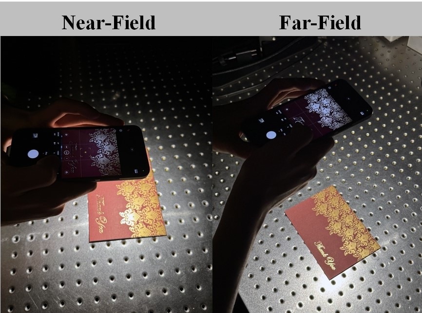

Li Wang （王里）
Email: li_wang@tju.edu.cn
I am a third-year PhD student in the Visual Computing
Lab at Tianjin University,
under the supervision of Professor Jiawan Zhang.
In 2020, I completed my bachelor's degree in Measuring Technology and Instrument at Tianjin University. My research interests focus on appearance modeling and physics-based rendering within the field of computer graphics, and I am currently applying deep learning techniques to advance these areas.
🚀 I Am Actively Looking for Internship Opportunities!
If you're interested in collaborating or have any opportunities that align with my skills and research interests, please feel free to contact me.
-

NFPLight: Deep SVBRDF Estimation via the Combination of Near and Far Field Point lighting SIGGRAPH ASIA 2024
-
DeepBasis: Hand-Held Single-Image SVBRDF Capture via Two-Level Basis Material Model SIGGRAPH ASIA 2023
-
 Deep SVBRDF Estimation from Single Image under Learned Planar Lighting SIGGRAPH 2023[PDF] [Paper Page]
Deep SVBRDF Estimation from Single Image under Learned Planar Lighting SIGGRAPH 2023[PDF] [Paper Page] -
 Transparent Object Reconstruction via Implicit Differentiable Refraction Rendering SIGGRAPH ASIA 2023[PDF] [Paper Page]
Transparent Object Reconstruction via Implicit Differentiable Refraction Rendering SIGGRAPH ASIA 2023[PDF] [Paper Page] -
MakeBronze: An interactive system to promote Chinese bronze culture in children through hands-on experience with lost-wax casting International Journal of Human-Computer Studies 2023[PDF]